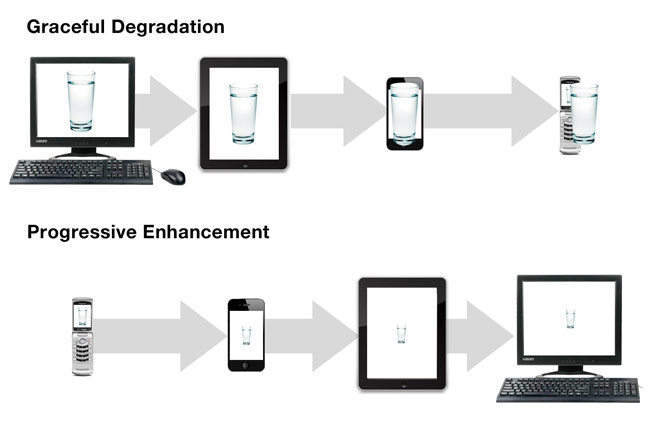

HTML5/CSS简介
首先来说一说什么是HTML5，HTML5可以认为是字面上的意义，也就是HTML的第五代产品，当然从另一个角度来说它是一种新的富客户端解决方案。
HTML5 将成为 HTML、XHTML 以及 HTML DOM 的新标准。
HTML 的上一个版本诞生于 1999 年。自从那以后，Web 世界已经经历了巨变。
HTML5 仍处于完善之中。然而，大部分现代浏览器已经具备了某些 HTML5 支持。
HTML：超文本标记语言。标记可以称为标签，节点，元素等。
HTML的核心是它的语义，也就是标签本身的含义。我们再写结构的时候只需要注重标签的语义而无需考虑标签的样式。
再写页面的时候，HTML、CSS、JS各有各的用处，HTML负责网页的结构，CSS负责网页的美化渲染，JavaScript负责用户与网页的交互。
写页面之前，主体结构一定要了解。
CSS
层叠样式表，它的核心是层叠，我们看到的最终效果往往不是一个CSS就能搞定的，它都是很多的CSS样式叠加才形成了用户最终看到的界面。
CSS的使用方式：
内联样式：直接写在行内，以style属性将样式直接写在元素上。
内部样式：写在<style>标签中的样式，通过选择器选择页面上的元素进行样式的添加。
外部样式：写在CSS文件中，通过link标签进行调用。
三种方式中，内联样式的优先级是最高的，另外两只优先级相同。写在页面中，优先级相同则写在后面的会覆盖前面的样式。（建议使用外部样式，写页面的时候要尽量做到结构与样式相分离，也就是页面结构，CSS样式最好不要放到一起）
网页的主体结构
<!DOCTYPE html> 文档声明头，主要是用来声明代码是H5的，如果不写的话，代码会被浏览器降级处理。
<html> 网页的全部
<head> 用来写对当前网页的一些设置信息，这些内容是用户看不到的
<meta charset="utf=8"> 设置网页的字符集
<body> 网页的主体，再页面上显示的内容基本上都在这里
支持Html5的浏览器包括Firefox（火狐浏览器），IE9及其更高版本，Chrome（谷歌浏览器），Safari，Opera等；国内的 遨游浏览器（Maxthon），以及基于IE或Chromium（Chrome的工程版或称实验版）所推出的360浏览器、搜狗浏览器、QQ浏览器、猎豹浏览器等国产浏览器同样具备支持HTML5的能力。
需要注意的是，虽然很多浏览器目前已经能够支持HTML5，但是显示效果仍旧存在差异性。这时，我们如果从样式的角度出发，可以采用下面的几种css方案。
CSS Reset
每种浏览器都有一套默认的样式表，即user agent stylesheet，网页在没有指定的样式时，按浏览器内置的样式表来渲染。这是合理的，像word中也有一些预留样式，可以让我们的排版更美观整齐。不同浏览器甚至同一浏览器不同版本的默认样式是不同的。但这样会有很多兼容问题，CSSReset可以将所有浏览器默认样式设置成一样。
CSS Reset 下载地址: https://meyerweb.com/eric/tools/css/reset/
Normalize(号称是CSS reset的替代方案，保留了一些内置的样式，并不是清除所有)。
CSS Hack
由于不同厂商的流览器或某浏览器的不同版本（如IE6-IE11,Firefox/Safari/Opera/Chrome等），对CSS的支持、解析不一样，导致在不同浏览器的环境中呈现出不一致的页面展现效果。这时，我们为了获得统一的页面效果，就需要针对不同的浏览器或不同版本写特定的CSS样式，我们把这个针对不同的浏览器/不同版本写相应的CSS code的过程，叫做CSS hack!
分类:
CSS Hack大致有3种表现形式，CSS属性前缀法、选择器前缀法以及IE条件注释法（即HTML头部引用if IE）Hack，实际项目中CSS Hack大部分是针对IE浏览器不同版本之间的表现差异而引入的。
"_"和星号" * "，IE7能识别星号" * "，但不能识别下划线"_"，IE6~IE10都认识"\9"，但firefox前述三个都不能认识。IE6能识别*html .class{}，IE7能识别*+html .class{}或者*:first-child+html .class{}。
关于IE的条件注释可以参考https://www.cnblogs.com/liujunhang/articles/10667109.html.
CSS hack书写顺序，一般是将适用范围广、被识别能力强的CSS定义在前面。
属性前缀法:
属性前缀法是在CSS样式属性名前加上一些只有特定浏览器才能识别的hack前缀，以达到预期的页面展现效果。
IE浏览器各版本 CSS hack 对照表
| hack | 写法 | 实例 | IE6(S) | IE6(Q) | IE7(S) | IE7(Q) | IE8(S) | IE8(Q) | IE9(S) | IE9(Q) | IE10(S) | IE10(Q) |
|---|---|---|---|---|---|---|---|---|---|---|---|---|
| * | *color | 青色 | Y | Y | Y | Y | N | Y | N | Y | N | Y |
| + | +color | 绿色 | Y | Y | Y | Y | N | Y | N | Y | N | Y |
| - | -color | 黄色 | Y | Y | N | N | N | N | N | N | N | N |
| _ | _color | 蓝色 | Y | Y | N | Y | N | Y | N | Y | N | N |
| # | #color | 紫色 | Y | Y | Y | Y | N | Y | N | Y | N | Y |
| \0 | color:red\0 | 红色 | N | N | N | N | Y | N | Y | N | Y | N |
| \9\0 | color:red\9\0 | 粉色 | N | N | N | N | N | N | Y | N | Y | N |
| !important | color:blue !important;color:green; | 棕色 | N | N | Y | N | Y | N | Y | N | Y | Y |
说明：在标准模式中
选择器前缀法:
选择器前缀法是针对一些页面表现不一致或者需要特殊对待的浏览器，在CSS选择器前加上一些只有某些特定浏览器才能识别的前缀进行hack。
目前最常见的是
*html *前缀只对IE6生效
*+html *+前缀只对IE7生效
@media screen\9{...}只对IE6/7生效
@media \0screen {body { background: red; }}只对IE8有效
@media \0screen\,screen\9{body { background: blue; }}只对IE6/7/8有效
@media screen\0 {body { background: green; }} 只对IE8/9/10有效
@media screen and (min-width:0\0) {body { background: gray; }} 只对IE9/10有效
@media screen and (-ms-high-contrast: active), (-ms-high-contrast: none) {body { background: orange; }} 只对IE10有效
等等
CSS Hack利弊：
一般情况下，我们尽量避免使用CSS hack，但是有些情况为了顾及用户体验实现向下兼容，不得已才使用hack。比如由于IE8及以下版本不支持CSS3,而我们的项目页面使用了大量CSS3新属性在IE9/Firefox/Chrome下正常渲染，这种情况下如果不使用css3pie或htc或条件注释等方法时,可能就得让IE8-的专属hack出马了。使用hack虽然对页面表现的一致性有好处，但过多的滥用会造成html文档混乱不堪，增加管理和维护的负担。
优雅降级和渐进增强:

由于低级浏览器不支持 CSS3，但是 CSS3 特效太优秀不忍放弃，所以在高级浏览器中使用CSS3，而在低级浏览器只保证最基本的功能。二者的目的都是关注不同浏览器下的不同体验，但是它们侧重点不同，所以导致了工作流程上的不同。
渐进增强（Progressive Enhancement）：一开始就针对低版本浏览器进行构建页面，完成基本的功能，然后再针对高级浏览器进行效果、交互、追加功能达到更好的体验。
优雅降级（Graceful Degradation）：一开始就构建站点的完整功能，然后针对浏览器测试和修复。比如一开始使用 CSS3 的特性构建了一个应用，然后逐步针对各大浏览器进行 hack 使其可以在低版本浏览器上正常浏览。
第三方插件:
关于兼容性问题，除了上述的解决方案外，还可以通过使用第三方的插件来解决兼容性问题。
个人笔记
关于一些标签的使用我们可以通过一些网站进行查询，可以去国内较为完善的W3cschool进行了解。
下面是一些零碎的知识点：
get和post的区别（get和post都是表单的属性method的属性值，method是表单提交数据的方式）：
1、get的传输方式的传输速度快，而post的传输速度就比较慢。
2、get的安全程度低，post的安全程度则是相对较高。
3、get的传输数据小，post可以传输的数据比较大。
百度的搜索内容一般就是用get的方式提交，而一些比较隐私的，例如账号登录时的数据提交用的是post。get和post本质没有什么区别，只不过get传输时是直接传输过去，而post则是先发起请求，等待响应返回之后才会开始传输数据，所以才有了以上的区别。
选择器生效的一些注意点：
权重的比较方式：ID选择器的权重最高，类选择器其次，元素选择器最低。
对比时，两个选择器，一个有ID选择器，一个没有，则不管后面有多少个类或者元素都没有ID选择器的高。
在直接选中的情况下，权重的生效，权重相同则是后面的会覆盖前面的样式；
在两个选择器都没有选中的情况下，哪一个更精确，那个就能生效；
两个都没选中而且精确度也是同样的情况下，还是比较权重。
在CSS中标签的等级大致分类：
块级元素：
1、独占一行；
2、可以设置其宽高；
3、不设置宽度，宽度则默认是100%；
4、可以当做容器使用。
行内元素：
可以和其他行内元素并排显示；
不能设置宽高，内容宽度为其宽度，行高为其高度。
行内块元素：
其既可以设置宽高，又可以和其他元素并列一行（非块元素）。ps:表单中的input是行内块元素
标准文档流：
浏览器的解析方式，从上到下、从左到右。
文本流：
网页中的文本内容。
脱离标准文档流的方式：
浮动，绝对定位，固定定位等。
元素浮动后会形成字围效果，是因为其只是脱离了标准文档流，但是没脱离文本流。
子元素全部浮动之后父元素的高度会变成零。
我们一般用有以下几种方法解决：
1、.clearfix{*zoom=1;}.clearfix:before,.clearfix:after{context:" ";display:table;}.clearfix:after{clear:both}（给父元素一个.clearfix的类名，将其放入样式中可以解决浮动的问题）
2、直接设置父元素的高度
3、父元素设置样式：overflow:hidder;
4、隔墙法：再浮动的元素父元素后面写一个div，给这个div加上clear：both的属性，也就是浮动效果清除的属性